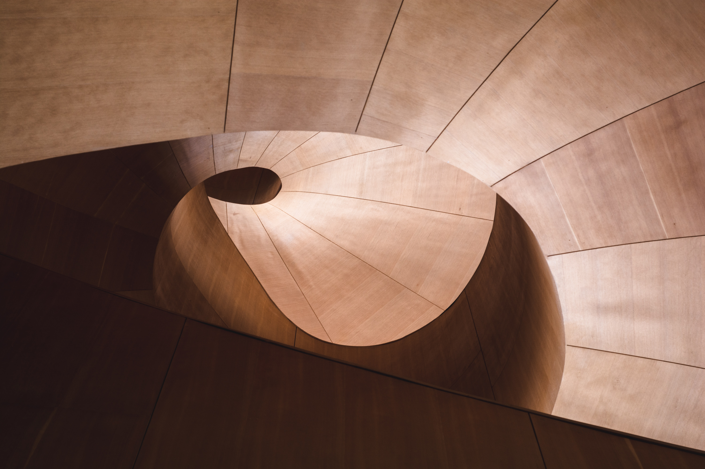
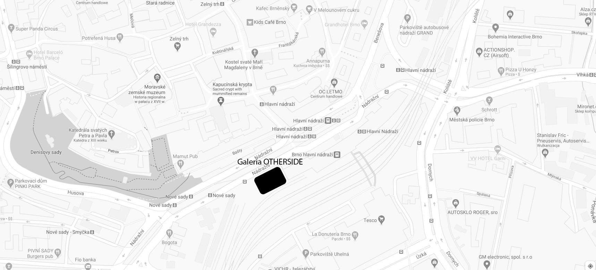

Początkowo ekspozycje ograniczały się jedynie do sztuki nowoczesnej. W kolejnych latach wraz z rozwojem galerii zaczęły pojawiać się wystawy obejmujące różnorodne tematy. W roku 2001 została ona przeniesiona do Brna. Obecnie Otherside to najnowocześniejsza galeria sztuki w regionie, ciesząca się niesłabnącą popularnością.
O GALERII
Galeria Otherside została założona w 1982 roku w małej miejscowości Biskupky. Jej twórcą jest Polak, który po II Wojnie Światowej wyemigrował do Czech. Początkowo ekspozycje ograniczały się jedynie do sztuki nowoczesnej. W kolejnych latach wraz z rozwojem galerii zaczęły pojawiać się wystawy obejmujące różnorodne tematy. W roku 2001 została ona przeniesiona do Brna. Obecnie Otherside to najnowocześniejsza galeria sztuki w regionie, ciesząca się niesłabnącą popularnością.

Skořepka 212
Trnitá
602-00 Brno-střed
Czechy
INFORMACJA
tel. +48 22 451 40 23 (w godzinach otwarcia galerii)
e-mail: galeria@otherside.pl
WSPÓŁPRACA
tel. +48 22 364 14 34
email: artysci@otherside.pl
PYTANIA DOTYCZĄCE EKSPOZYCJI
e-mail: ekspozycje@otherside.pl
KONTAKT
Galeria Otherside: Skořepka 212
Trnitá
602-00 Brno-střed
Czechy
INFORMACJA
tel. +48 22 451 40 23 (w godzinach otwarcia galerii)
e-mail: galeria@otherside.pl
WSPÓŁPRACA
tel. +48 22 364 14 34
email: artysci@otherside.pl
PYTANIA DOTYCZĄCE EKSPOZYCJI
e-mail: ekspozycje@otherside.pl